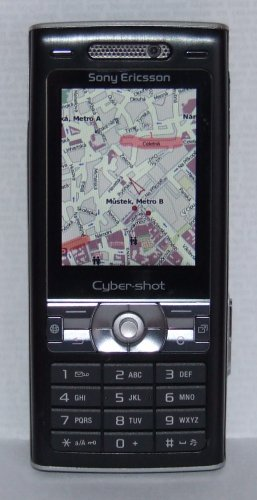
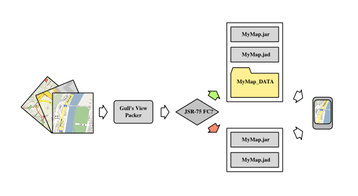

Aplikace běžící na telefonu SonyEricsson K800i
Aplikace
Gull's View
uživateli umožňuje používat své mobilní zařízení jako off-line prohlížeč rastrových map s možností navigace pomocí vestavěného GPS, případně externího GPS modulu komunikujícího se zařízením pomocí Bluetooth.
Aplikace samotná neobsahuje žádné mapy, ty si musí uživatel obstarat sám např. stažením ze zdroje na Internetu. Před stahováním rastrových map si vždy pečlivě přečtěte podmínky používání zvolené mapové služby!
Aplikace funguje pouze na zařízeních s podporou MIDP 2.0 (CLDC 1.1).
V současnosti jsou implementovány následující vlastnosti:
zobrazení mapového výřezu a plynulé přesouvání v mapě pomocí kurzorových kláves
zaznamenávání vlastních tras a bodů zájmu do mapy
zobrazení délek jednotlivých tras
zobrazení směru ke zvolenému cíli a jeho vzdálenosti
uložení stavu aplikace při ukončení a jeho obnovení při dalším spuštění
možnost dočasného pozastavení aplikace
permanentní podsvícení displeje (tato funkce je dostupná pouze na některých zařízeních SonyEricsson a Nokia)
lokalizace pomocí vestavěné GPS (pouze u zařízení s podporou JSR-179 Location API)
lokalizace pomocí externího GPS Bluetooth (pouze u zařízení s podporou JSR-82 Bluetooth API)
Experimentálně také:
přibližná lokalizace podle aktuálně registrované BTS (základnové stanice signálu GSM) - funguje pouze na některých telefonech SonyEricsson
zobrazení mapy ve 3D

Princip aplikace Gull's View
Aplikace je hostována službou
code.google.com
, stahujte na této adrese:
http://code.google.com/p/gullsview/downloads/list
Aplikace se neinstaluje, pouze rozbalte stažený archiv a spusťte soubor
GullsViewPacker.jar
kliknutím nebo z textové konzole příkazem
java -jar GullsViewPacker.jar [-stdio] [-properties FILE] [-swing]
kde jednotlivé volby znamenají toto:
-stdio - spustí aplikaci v textovém režimu (z textové konzole)
-properties FILE - spustí aplikaci v dávkovém režimu - odpovědi na všechny dotazy čerpá ze souboru FILE ve formátu Java Properties
-swing - spustí aplikaci v grafickém režimu (výchozí volba)
Tato aplikace Vás v několika krocích provede procesem vytvoření mapové aplikace pro mobilní telefon.
Nejdříve si připravte mapová data ve formě čtvercových obrázků - dlaždic, z nichž bude celková mapa seskládána.
Soubory s jednotlivými dlaždicemi si pojmenujte tak, aby název obsahoval číselný index řádku a sloupce této dlaždice (např. 10_12.png, 11_1.png, atd.).
Levá horní dlaždice má index 0:0, soubor se tedy bude jmenovat např. 0_0.png
Dále je dobré vědět jakým způsobem se mají přepočítávat mapové souřadnice na skutečné zemské souřadnice (zemská šířka, zemská délka).
Tato aplikace umožňuje počítání souřadnic dvěma způsoby - systémem Mercator a bilineární transformací:
Mercator - je projekcí geoidu na váleci s pyramidovým dělením dlaždic na 4 poddlaždice s vyšším rozlišením, používá jej např. projekt
www.openstreetmap.org
nebo
maps.google.com
.
Pokud máte dlaždice v této projekci, stačí Vám znát tyto tři informace: X-ovou a Y-ovou souřadnici levé horní dlaždice a číslo úrovně přiblížení (0 znamená celá země v jediné dlaždici, 1 znamená celá země ve 4 dlaždicích, 2 - v 16 dlaždicích, atd.
Tyto tři hodnoty jsou většinou součástí URL adresy pomocí níž byla konkrétní dlaždice stažena z dlaždicového serveru.
Bilineární transformace - v tomto případě se souřadnice interpoluje ze zadaných zemských souřadnic tří rohů mapy.
Dále je nutné znát parametry mobilního zařízení, pro které mapovou aplikaci vytváříte.
Jde především o podporu jednotlivých rozšíření API - např. jestli má Java aplikace přístup k souborovému systému, k Bluetooth a podobně.
Pokud jste si jisti, že Vaše zařízení obsahuje podporu JSR-75-FileConnection, je možné dlaždice NEvložit do JAR archivu mobilní aplikace, ale pouze je umístit do adresáře na paměťové kartě zařízení a nechat mobilní aplikaci tyto data postupně číst pomoci JSR-75 API.
Pozor - někteří výrobci mobilních zařízení uživateli neumožní jednorázově povolit přístup Java aplikaci k paměťové kartě (souborovému systému) a při načtení každé další dlaždice uživatele obtěžují kontrolními otázkami.
Pokud tedy máte připraveny všechny mapové dlaždice a informace k počítání souřadnic, můžete odpovídat na jednotlivé otázky tohoto průvodce.
Po jeho dokončení bude ve zvoleném adresáři vytvořena dvojice souborů s příponami JAD a JAR které je možné obvyklým způsobem nahrát do mobilního zařízení s podporou Javy.
Copyleft 2008 Tomáš Darmovzal
Tato aplikace je šířena zdarma včetně zdrojových kódů za podmínek licence
GPLv3
.
Tato aplikace je autorem poskytována výhradně bez datového obsahu (bez rastrových mapových podkladů) nebo s datovým obsahem šířeným pod licencí kompatibilní s GPLv3. Za datový obsah distribuovaný společně s aplikací nese zodpovědnost tvůrce konkrétního mobilního JAR balíčku (midlet suite). Pokud máte podezření, že datový obsah je šířený v rozporu s licencí či autorským zákonem, aplikaci ze svého zařízení odinstalujte.
křížek [#] - přepínání pohledu na výšku / na šířku
hvězdička [*] - přepínání zobrazení přes celý displej
hlavní tlačítko [FIRE] - umístění bodu pokračování trasy
[5] - zobrazení vzdálenosti od cíle
směrové šipky a číselná tlačítka - ovládání pohybu mapy